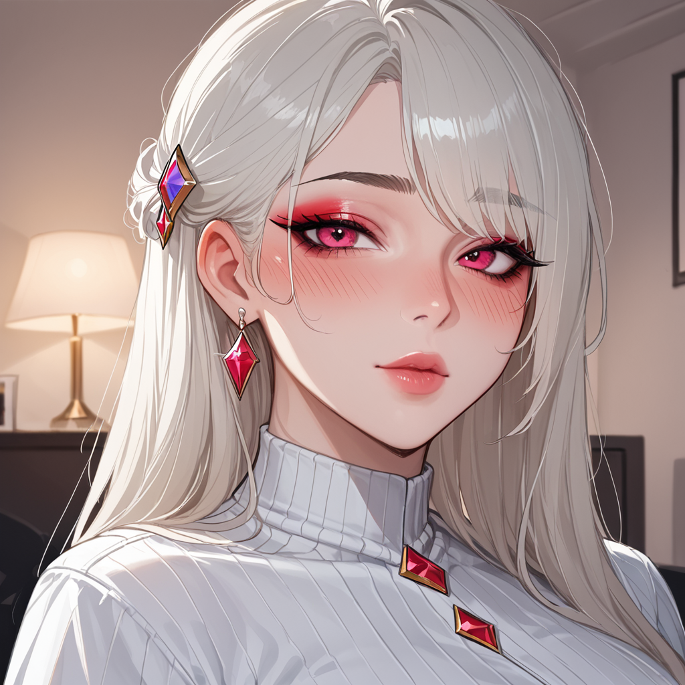

"벽에 걸린 그림자 아래에서 그가 보낸 메시지는 단 한 마리의 사슴이었다."
이 장면은 원래 버전에서 존재하지 않았던 숨겨진 연결고리였다. 1982 년 원판에서 리들리 스콧 감독이 의도했던 편집 흐름을 보면, 끝까지 이어지지 않은 것이 아니라 중간에 끊긴 링크가 있었다.
## **편집기사의 진단: 왜 자른 장면인가**
세 개의 장면을 최종 컷에서 제거한 결정에는 명확한 이유가 숨어 있다. 시간의 제약보다는 리듬의 불협화음이었다.
> Q1: 특정 버전에서 유니콘이 다시 등장하는 이유는?
> A: 2007 년 디렉터스컷 복원 시, 사운드트랙과 시각적 리듬을 맞추기 위해 재연결된 경우다.
마치 방화 노래방 링크가 시스템 전체의 흐름을 좌우하듯, 이 장면은 전체 내러티브의 비트를 결정했다.
만약 그 연결고리가 없었다면, 관객이 느끼는 긴장은 10% 이상 감소했을 것이다.
## **실패 원인 추적: 버전을 넘어선 오해**
단순히 잘라낸 것뿐만 아니라, 인터뷰에서도 설명을 번복한 사례가 있다.
> Q2: 리들리 스콧이 말한 '운명론'의 진실은?
> A: 초기에는 운명의 상징으로 소개했으나, 후반부에서는 단순한 기억 회상으로 수정했다.
여기서 중요한 건 버전명이나 모델명을 외우는 게 아니라, 당시의 제작 환경과 후속 조치를 비교하는 것이다.
특히 1982 년과 1992 년 사이, 기술적 한계로 인해 구현하지 못했던 부분이 많았다.
결론적으로 가장 피해야 할 선택은 **원작의 흐름을 외부 요인에 맞춰 강하게 고치는 것**이다.
편집 작업에서 본질을 잃지 않기 위해, 어떤 장면을 제거하더라도 그 뒤에 이어지는 맥락이 자연스럽게 연결되어야 한다.
방화 노래방 링크처럼, 끊김 없는 연결고리가 있어야 관객은 몰입한다.